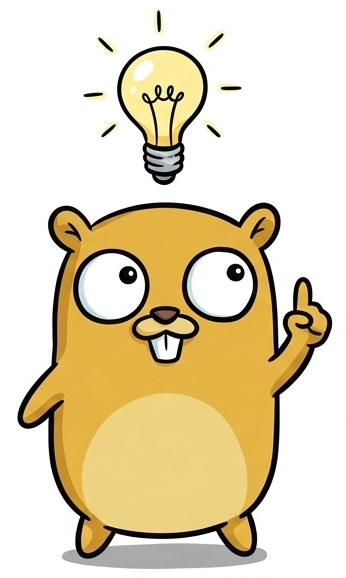
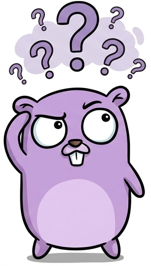
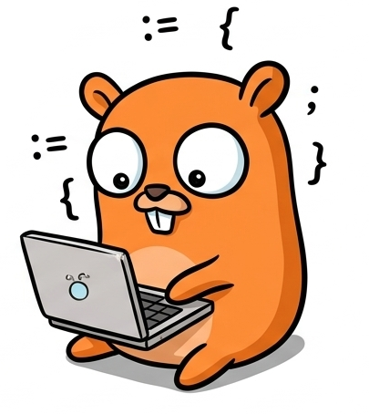
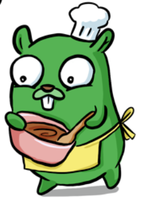
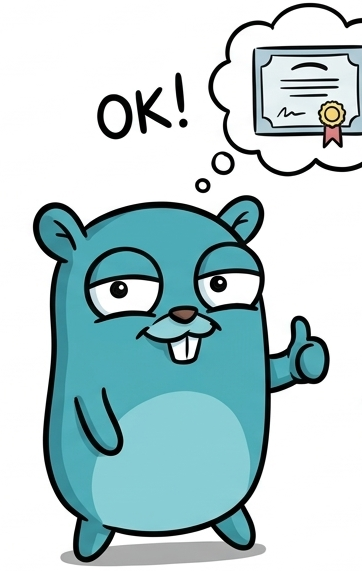

Avant même d'écrire une ligne de Go, il faut installer dans ta tête une nouvelle façon de raisonner. C'est le module le plus important du cours - celui que tout le monde a envie de sauter, et celui qui te sauvera le plus de fois.

Imagine que tu es un cuisinier. On te donne des ingrédients (des œufs, de la farine), tu les transformes (tu mélanges, tu cuis), et tu obtiens un résultat (une crêpe). Un programme informatique fait exactement pareil, sauf qu'au lieu d'ingrédients il prend des données : ce que tape l'utilisateur, un fichier, l'heure du système... Il les transforme avec des calculs et des règles, et il produit un résultat : un message affiché, un fichier sauvegardé, un jeu qui réagit.
Sans cette idée en tête, on code "au hasard". Avec elle, face à n'importe quel exercice, tu te poses toujours la même question en 3 temps : qu'est-ce qui rentre ? qu'est-ce qu'on en fait ? qu'est-ce qui doit sortir ?
Un programme qui n'a même pas d'entrée : il sort toujours la même chose.
Cette fois, il y a une vraie Entrée : le prénom tapé au clavier.
Et si l'utilisateur n'entre rien du tout (il appuie juste sur Entrée) ?
Un programme est toujours à l'écoute de son Entrée. Si l'Entrée ne vient jamais, le Traitement ne démarre jamais, et il n'y a jamais de Sortie. C'est pour ça qu'on apprendra bientôt à valider les saisies (module 04.5).
Dans « Entrée → Traitement → Sortie », que représente le Traitement ?
Demande à quelqu'un "range ta chambre" en une seule instruction géante : il/elle bloque, ne sait pas par où commencer. Mais découpe en "range les vêtements", "fais le lit", "range le bureau" : chaque étape devient faisable toute seule. Un programme, c'est pareil. "Faire un jeu de devinette" est trop gros pour être codé d'un bloc. On le découpe en petites tâches, chacune assez simple pour tenir dans une fonction.
Problème : "afficher la table de multiplication de 7".
Problème : "Projet RED - un mini-jeu textuel".
afficherMenu())lireChoix())jouerTour())estTermine())Chaque fonction est un petit "range ta chambre" gérable tout seul. Le
main() ne fait qu'appeler ces fonctions dans le bon ordre.
Piège inverse : découper à l'excès. Une fonction
ajouterUn(x int) int { return x + 1 } pour une seule addition simple ajoute de la complexité
inutile. Le découpage sert quand une tâche a plusieurs étapes ou sera réutilisée - pas pour chaque ligne
isolée.
Pourquoi découpe-t-on un programme en plusieurs petites fonctions ?
Un architecte ne pose pas les premières briques avant d'avoir dessiné le plan. Le pseudo-code est ce plan : tu écris ta logique en français, sans te soucier des points-virgules ni des accolades. Ça te force à réfléchir à l'algorithme avant de te battre avec la syntaxe - les deux problèmes ne sont jamais mélangés.
Pseudo-code d'une calculatrice (module 03) :
Pseudo-code d'une boucle de menu qui ne s'arrête que sur demande explicite - le cas "répéter indéfiniment" est le piège classique des débutants (on oublie souvent la condition de sortie) :
Quel est l'intérêt principal d'écrire le pseudo-code avant le vrai code ?
Une erreur de compilation, c'est comme un GPS qui te dit "tourne à gauche dans 200m" : ce n'est pas une punition, c'est une indication précise de où corriger. Les débutants paniquent et réécrivent tout ; les développeurs expérimentés lisent calmement et corrigent un détail.
Pritnln au lieu de Println.Traduction : à la ligne 8, colonne 14, tu essaies d'utiliser age qui
est un string (texte) là où Go attend un int (nombre). Solution : convertis avec
strconv.Atoi (module 01.6).
Erreurs en cascade : une seule faute (ex. accolade { oubliée)
peut générer 10 lignes d'erreurs différentes plus bas. Toujours corriger la première erreur du haut, recompiler, et regarder ce qu'il en reste
- souvent les 9 autres disparaissent toutes seules.
Copier-coller le message d'erreur dans un moteur de recherche sans l'avoir lu. Prends 5 secondes : fichier, ligne, et le mot-clé du message (undefined, cannot use, expected...) te disent déjà 80% du problème.
Tu vois « ./main.go:12:3: undefined: tot ». Que fais-tu en premier ?
Tu dois être capable, face à un énoncé, de dire à voix haute "Entrée = ..., Traitement = ..., Sortie = ...", de découper un problème en 3-4 sous-tâches, et de repérer numéro de ligne + mot-clé dans une erreur. Si oui, direction Module 01 !
Maintenant que tu penses en Entrée → Traitement → Sortie, on va écrire les premières vraies briques : le squelette d'un fichier Go, les variables, les types, et comment parler avec l'utilisateur.

Une lettre a besoin d'une adresse, d'un en-tête et d'un corps pour être livrée et comprise. Un fichier Go a besoin de la même structure minimale pour que l'ordinateur sache : d'où partir, quels outils charger, et quoi exécuter en premier.
main est un nom spécial : il dit à Go "ce paquet doit produire un
programme qu'on peut lancer" (et non une simple bibliothèque)."fmt" est le nom de la boîte à outils qui sait afficher du texte à l'écran
(format).main est le nom réservé de la fonction que Go exécute en premier, automatiquement,
quand tu lances le programme.. veut dire "va chercher
Println à l'intérieur de la boîte à outils fmt". Println affiche le texte puis passe à la
ligne suivante.Écris ce code dans un fichier nommé main.go, puis ouvre un terminal dans ce dossier et tape :
go run compile ET exécute en une seule commande - idéal pendant que
tu apprends. Quand ton programme est prêt à être distribué, go build compile un fichier
exécutable autonome (.exe sous Windows) que tu peux lancer sans avoir Go installé.
Deux affichages successifs - l'ordre d'écriture = l'ordre d'exécution :
Import inutilisé - Go est strict, il refuse de compiler :
En Go, contrairement à d'autres langages, un import ou une variable déclarée et jamais utilisée est une erreur de compilation, pas juste un avertissement. Le programme ne compile pas du tout tant que ce n'est pas corrigé.
Tu importes "fmt" mais tu ne l'utilises nulle part dans le fichier. Que se passe-t-il ?
Sans variable, ton programme est amnésique : il ne peut rien retenir entre deux lignes. Une variable est une boîte étiquetée en mémoire : tu lui donnes un nom, tu ranges une valeur dedans, et tu peux la relire ou la remplacer plus tard. Une constante, c'est la même boîte mais scellée à la colle : une fois remplie, personne ne peut changer son contenu (utile pour un taux de TVA, un nombre Pi, un nombre max de joueurs...).
nom, son type est
string (texte) - Go doit toujours savoir le type d'une boîte pour l'utiliser
correctement.20 et déduit tout seul que c'est un int. Ne fonctionne
qu'à l'intérieur d'une fonction.Un score de jeu qui évolue, et une constante de configuration qui ne bouge jamais :
Essayer de modifier une constante - Go refuse à la compilation :
Utiliser := une deuxième fois sur la même variable dans le même bloc → erreur
no new variables on left side of :=. Une fois la boîte créée, on la remplit avec =
tout simplement, plus :=.
x a déjà été créée avec x := 5. Comment lui donner la valeur 10 juste après ?
Dans un tiroir à couverts, on ne range pas les fourchettes avec les verres : chaque chose a sa case pour
éviter la pagaille. Le type d'une variable, c'est cette case : Go doit savoir si une boîte contient un nombre
entier, un nombre à virgule, du texte ou un vrai/faux, pour savoir quelles opérations sont permises
(additionner deux int : oui ; additionner un texte et un nombre directement : non).
Un panier d'e-commerce simplifié :
Mélanger les types directement - Go refuse, contrairement à des langages plus permissifs :
Go ne convertit jamais automatiquement un type dans un autre, même si "ça a l'air logique". Il faut
toujours convertir explicitement : prix * float64(quantite). C'est plus verbeux, mais ça évite
des bugs silencieux fréquents dans d'autres langages.
prix (float64) et quantite (int). Que se passe-t-il avec prix * quantite sans conversion ?
Ce que tu dis dans une pièce fermée ne s'entend pas dans la pièce d'à côté. Une variable créée à l'intérieur
d'un bloc { } "vit" seulement dans ce bloc : dès que l'accolade se ferme, elle disparaît de la
mémoire. C'est une protection, pas une contrainte : ça évite que deux bouts de code différents se marchent
dessus par erreur avec le même nom de variable.
y naît à l'intérieur du
bloc if.y est détruite.
Elle n'existe plus une seule ligne plus bas.Solution : déclarer la variable avant le bloc si on veut la garder après :
Deux variables de même nom dans deux scopes différents ne se confondent jamais - la plus "proche" gagne :
Croire qu'on modifie la variable extérieure avec := à l'intérieur d'un bloc. En réalité
:= crée une toute nouvelle boîte qui masque temporairement l'ancienne, sans jamais la
toucher.
Une variable créée avec := à l'intérieur d'un if existe-t-elle encore après le } fermant ?
Un programme muet et sourd ne sert à rien : il doit pouvoir parler (afficher) et écouter (saisir) pour
interagir avec un humain. Println/Printf sont la bouche, Scan est
l'oreille.
%s = trou pour un string,
%d = trou pour un nombre entier (decimal). Chaque trou est rempli, dans l'ordre, par
les arguments après la phrase.& veut dire "l'adresse de la boîte
prenom", pas son contenu. Scan a besoin de savoir où écrire la saisie, donc où se trouve la boîte
physiquement en mémoire (approfondi en 06.1).Formatage propre d'une fiche joueur avec Printf :
| Trou | Type attendu | Valeur insérée |
|---|---|---|
| %s | string | Yanis |
| %d | int | 7 |
| %.1f | float, 1 décimale | 85.5 |
Résultat écran : Yanis | Niveau 7 | PV: 85.5
Mauvais type de trou pour la valeur - le programme compile mais affiche n'importe quoi :
Oublier & devant une variable dans Scan. Sans &, Go donne une
copie de la valeur au lieu de son adresse : Scan écrit dans le vide, et la variable originale reste
inchangée.
Pas besoin de connaître %s/%d/%f par cœur dès le premier jour. Deux verbes universels dépannent dans presque tous les cas :
%v est ton filet de sécurité : utilise-le pour explorer/déboguer
rapidement, puis affine avec %s/%d/%.2f quand tu veux un affichage
précis pour l'utilisateur final.
Pourquoi écrit-on fmt.Scan(&age) et pas fmt.Scan(age) ?
Tout ce qu'un utilisateur tape au clavier arrive toujours sous forme de texte, même s'il tape des chiffres. Pour calculer avec ces chiffres, il faut d'abord "traduire" le texte en vrai nombre - comme un douanier qui convertit des devises avant de pouvoir additionner deux prix de pays différents.
import "strconv".Reconvertir un nombre en texte pour l'afficher dans une phrase construite avec des + :
L'utilisateur tape du texte non numérique - Atoi renvoie une erreur au lieu de planter :
Ignorer err avec _ pour "aller plus vite"
(nombre, _ := strconv.Atoi(texte)). Si la conversion échoue, nombre vaut 0
silencieusement - un bug très difficile à repérer plus tard, car le programme ne plante pas, il calcule
juste faux.
Que vaut nombre après nombre, _ := strconv.Atoi("abc") ?
Tu dois savoir écrire un fichier Go complet de zéro, déclarer des variables avec var et
:=, choisir le bon type, expliquer pourquoi une variable "meurt" à la fin de son bloc,
dialoguer avec l'utilisateur, et convertir texte ↔ nombre en gérant l'erreur. Prochaine étape : Module 02,
la logique de décision.
Jusqu'ici ton programme exécutait toujours la même suite de lignes. Ce module lui apprend à choisir son chemin et à répéter des actions - c'est ce qui transforme une liste d'instructions figée en un vrai programme réactif.
Avant de décider quoi que ce soit, il faut pouvoir poser une question
fermée : est-ce plus grand ? est-ce égal ? est-ce que les deux conditions sont vraies en même temps ?
Les opérateurs de comparaison (==, !=, <, >...) sont
ces questions ; les opérateurs logiques (&&, ||, !) permettent de les
combiner, comme "il faut avoir 18 ans ET une pièce d'identité" pour rentrer en boîte.
bool
(true/false), jamais un nombre.= veut dire
"range la valeur", deux == veulent dire "compare". Confondre les deux est l'erreur n°1 des
débutants dans beaucoup de langages (Go, lui, refuse carrément de compiler if x = 5).
!true devient
false.L'accès à une boîte de nuit : il faut être majeur ET avoir sa carte d'identité.
Une seule des deux conditions suffit à tout faire basculer avec && :
Écrire if x = 5 au lieu de if x == 5. En Go cette confusion est bloquée à la
compilation (contrairement à certains langages où elle crée un bug silencieux), mais le réflexe "deux égales
pour comparer" doit devenir automatique.
age >= 18 vaut true, aCarte vaut false. Que vaut age >= 18 && aCarte ?
Un distributeur de billets ne fait pas la même chose selon que ton solde est suffisant ou non.
if est ce carrefour : "SI cette question est vraie, prends ce chemin ; SINON, prends l'autre."
Sans lui, ton programme ferait toujours exactement la même chose, quelle que soit la situation.
{ } qui suit s'exécute.bool.Un système de notation à trois niveaux - l'ordre des if compte :
Inverser l'ordre des conditions change tout - un piège très classique :
Go teste les conditions dans l'ordre d'écriture et s'arrête à la première vraie. Si tu mets la
condition la plus large en premier, les cas plus précis en dessous ne sont jamais atteints. Range toujours
les if/else if du cas le plus restrictif au plus large.
Ce bac à sable simplifié ne gère que if/else (2 branches) - le vrai else if est visible dans le simulateur ci-dessus.
if note >= 10 {...} else if note >= 16 {...} - avec note = 18, quelle branche s'exécute ?
Un menu de restaurant avec 8 plats écrit en if / else if / else if / else if... devient
illisible. switch est fait pour ça : "selon la valeur exacte de cette variable, va directement
dans la bonne case" - comme un standardiste qui redirige un appel selon le numéro de poste demandé, sans
tester 8 conditions une par une.
choix ==, switch compare tout seul.break, et il n'y a pas de
"fall-through" accidentel vers le case suivant.else final, optionnel mais recommandé.Un menu interactif avec cas par défaut :
Regrouper plusieurs valeurs dans un seul case (séparées par des virgules) :
Croire qu'un case Go "tombe" dans le suivant comme en C ou en JavaScript sans
break. En Go c'est l'inverse : chaque case s'arrête tout seul, et si tu veux
vraiment enchaîner sur le case suivant il faut le mot-clé explicite fallthrough (rarement
utilisé).
En Go, faut-il écrire break à la fin de chaque case d'un switch ?
Faire 10 pompes, c'est répéter le même mouvement 10 fois en comptant. Une boucle comptée fait pareil : "répète ce bloc, en comptant, jusqu'à atteindre une limite précise." Sans elle, il faudrait copier-coller la même ligne 10 fois - imagine pour 1000 fois.
i++ = "ajoute 1 à i".Afficher la table de multiplication de 7 (module 00.2) :
Une erreur de condition qui ne boucle jamais :
Oublier que la condition est vérifiée avant le premier tour aussi. Si elle est fausse dès le départ, le corps de la boucle ne s'exécute jamais, pas même une fois.
Parfois tu ne sais pas à l'avance combien de fois répéter - tu
veux juste continuer "tant qu'une condition tient", comme "continue à courir tant que tu as de
l'énergie". C'est le rôle du for sans compteur explicite : l'équivalent du
while d'autres langages.
energie soit créée avant, et
modifiée dans le corps, sinon boucle infinie.Vider une jauge de vie jusqu'à zéro, tour de jeu par tour de jeu :
Oublier de faire progresser la variable de condition :
C'est LE piège n°1 des boucles conditionnelles : si rien à l'intérieur du corps ne fait évoluer la variable testée, la condition reste vraie pour toujours et le programme se fige. Toujours vérifier : "qu'est-ce qui, dans ce corps, rapproche la condition de sa sortie ?"
for energie > 0 { fmt.Println("...") } - sans energie-- dans le corps, que se passe-t-il ?
Un jeu tourne "tant que le joueur n'a pas quitté" - une condition qui dépend d'un événement futur, pas
d'un compteur connu à l'avance. for {} (sans aucune condition) boucle pour toujours, et
break devient la seule porte de sortie - comme une réunion sans heure de fin prévue, qui ne
s'arrête que quand quelqu'un se lève et dit "stop".
Sauter les nombres pairs avec continue, s'arrêter à 7 avec break :
Un for {} sans aucune condition de sortie :
C'est le piège déjà annoncé en 00.3 et 02.5, sous sa forme la plus radicale : un for {}
sans aucun break atteignable ne s'arrête jamais. Avant d'écrire
for {}, demande-toi toujours : "dans quelle condition est-ce que je sors ?"
Quelle est la différence entre continue et break dans une boucle ?
Tu dois savoir combiner des conditions avec && / || / !, choisir entre if/else et switch selon le nombre de cas, écrire les 3 formes de la boucle for (comptée, conditionnelle, infinie), et surtout repérer instantanément si une boucle a bien une condition de sortie atteignable. Prochaine étape : Module 03, le TP Calculatrice.
Ton premier vrai programme complet. On va aussi apprendre à découper le code en fonctions - les "petites tâches" du module 00.2, enfin traduites en Go.

Construire un programme qui demande deux nombres et une opération, puis affiche le résultat - en gérant proprement le cas où l'utilisateur essaie de diviser par zéro.
Écris d'abord le pseudo-code (module 00.3), puis code fonction par fonction (03.2) en testant chacune séparément avant d'assembler.
Une recette de cuisine qu'on utilise souvent (une pâte à crêpes), on ne la réécrit pas à chaque fois : on la note une fois, et on s'y réfère. Une fonction, c'est exactement ça - une suite d'instructions nommée et réutilisable, qu'on appelle par son nom au lieu de recopier son code partout.
func main(), mais ici on donne un nom personnalisé.Une fonction qui déclare un type de retour doit toujours renvoyer une valeur sur tous les chemins possibles :
Oublier un return pour un chemin possible. Go refuse de compiler si un chemin du code peut
sortir de la fonction sans renvoyer la valeur promise.
func f(b int) int { if b != 0 { return 1 } } - que se passe-t-il à la compilation ?
Demande "quelle heure est-il et quel jour sommes-nous ?" - une seule réponse ne suffit pas, il en faut deux en même temps. Une fonction Go peut renvoyer plusieurs valeurs à la fois, ce qui est rare dans d'autres langages mais très naturel en Go - notamment pour renvoyer "le résultat, ET une erreur éventuelle" en un seul geste.
float64 au lieu de le répéter.import "errors".Oublier de récupérer une des deux valeurs de retour - Go exige que tu récupères toutes les valeurs
renvoyées (ou explicitement avec _ celles que tu ignores volontairement).
Puisque Go sait affecter plusieurs valeurs d'un coup (a, b := ...), il peut échanger deux
variables sans boîte temporaire - contrairement à la plupart des langages où il faut une 3e variable
intermédiaire :
Le membre de droite b, a est entièrement évalué avec les
anciennes valeurs avant que Go ne les range dans a et b - c'est ce qui rend
l'échange direct possible.
Un livreur qui ne peut pas livrer un colis (adresse introuvable) ne fait pas semblant que tout va bien : il te prévient. En Go, une erreur est une valeur ordinaire qu'on vérifie juste après chaque opération risquée - pas un mécanisme caché qui interrompt le programme sans prévenir.
Le même code, mais avec une division valide - la branche d'erreur n'est jamais prise :
Vérifier l'erreur mais oublier le return :
Vérifier err sans jamais return (ou continue/break
selon le contexte). Le programme continue alors avec des données invalides (ici resultat = 0)
comme si de rien n'était.
En Go, comment le programme réagit-il automatiquement si une fonction renvoie une erreur ?
Quand tu ouvres une porte de frigo, tu sais que tu devras la refermer, même si tu ne sais pas encore
exactement quand. defer fait cette promesse à Go : "quoi qu'il arrive dans cette fonction,
exécute cette ligne juste avant de la quitter" - parfait pour fermer un fichier, une connexion, ou libérer
une ressource.
Résultat : ouverture du fichier → lecture en cours... → fermeture du fichier. La fermeture est garantie, même si la fonction a plusieurs points de sortie.
Plusieurs defer s'empilent et se rejouent dans l'ordre inverse (le dernier annoncé est
le premier joué) :
Croire que les defer s'exécutent dans l'ordre où ils sont écrits. En réalité c'est une pile
: dernier entré, premier sorti (LIFO).
defer Println("A") ; defer Println("B") - dans quel ordre s'affichent-ils à la fin de la fonction ?
Tu dois savoir écrire et appeler une fonction, lui faire renvoyer plusieurs valeurs (résultat + erreur),
vérifier systématiquement err != nil, et utiliser defer pour garantir une action
de nettoyage. Prochaine étape : Module 04, le guide décisionnel.
Tu connais maintenant if, switch, for, les slices, maps et structs à venir. Ce module te donne la boussole : face à une situation neuve, comment choisir le bon outil sans hésiter.
Choisir entre un tournevis et une perceuse dépend de la vis. Choisir entre if et
switch dépend de la forme de ta décision : une question
complexe avec des plages de valeurs, ou un simple aiguillage vers une valeur exacte parmi plusieurs ?
Conditions complexes (&&, ||), plages de valeurs (age >= 18), peu de branches (2-3).
Beaucoup de valeurs exactes possibles pour UNE même variable → menus, jours, statuts.
Tu dois traiter un menu à 6 choix numérotés (1 à 6). Que choisis-tu ?
Un casier de piscine numéroté : le nombre de casiers est décidé une fois pour toutes à la construction du bâtiment - tu ne peux pas en ajouter un 51e si le mur en contient 50. Un tableau (array) en Go, c'est exactement ça : une suite de cases numérotées, dont le nombre est fixé pour toujours dès que tu l'écris - il fait partie du type lui-même, pas juste une info à côté.
C'est la brique la plus simple pour ranger plusieurs valeurs. Tu verras au module 05.2 la slice, qui ressemble à un tableau mais peut grandir - retiens bien la différence : tableau = taille gravée dans le marbre, slice = sac extensible.
3 fait partie du type : [3]int et [4]int sont deux types différents, pas la même chose avec une case en plus.Un tableau non initialisé n'est jamais "vide" en Go - il est rempli de la valeur zéro du type (0 pour int) :
3 contrôles dans l'année : un nombre fixe et connu à l'avance - le cas d'usage idéal pour un tableau plutôt qu'une slice :
Accéder à un index en dehors du tableau :
Confondre "un tableau de 3 cases" avec "les index vont de 1 à 3". En Go (et dans la quasi-totalité des langages), un tableau de taille N a des index valides de 0 à N-1. notes[3] sur un tableau de 3 cases est TOUJOURS invalide, aucune exception.
On pourrait croire qu'une string est juste "un tableau de caractères" comme dans d'autres langages. En Go, ce n'est pas le cas : une string est une suite immuable d'octets (pas de caractères). Conséquences concrètes :
Rappelle-toi aussi le module 05.1 : len("café") vaut 5, pas 4, car "é" prend 2 octets - encore une preuve qu'une string se comporte différemment d'un tableau de lettres. Pour manipuler du texte lettre par lettre, on convertit en []rune (vu en 05.1), jamais en indexant la string directement.
notes est un [3]int déjà rempli. Que se passe-t-il si tu essaies notes = append(notes, 20) ?
Une seule chaussette, une paire de chaussettes rangée dans un tiroir, un tiroir étiqueté par propriétaire, ou une fiche complète décrivant une personne : quatre façons différentes de ranger de l'information, chacune adaptée à un besoin précis.
1 seule valeur isolée : un âge, un nom, un score.
Liste ordonnée de valeurs du même type : les notes d'un élève.
Association clé → valeur : un prénom → son âge.
Plusieurs infos différentes mais liées : un élève (nom + âge + notes).
Tu veux stocker le nom, le prix ET le stock d'un même produit. Quelle structure choisir ?
Presque tous les programmes CLI (dont le Projet RED) tournent en boucle en proposant un menu, jusqu'à ce que
l'utilisateur choisisse de quitter. C'est la combinaison for (répéter) + switch
(aiguiller) qui rend ça possible.
"Trouve tous les élèves admis" ou "trouve le plus grand score" nécessite de parcourir chaque élément d'une collection et de tester une condition sur chacun.
C'est le patron for + if.
Rappelle-toi le module 00.1 : si l'Entrée est invalide, tout le reste s'effondre. Ce patron répète la demande de saisie jusqu'à obtenir une valeur acceptable, au lieu de faire planter ou continuer avec des données fausses.
Pourquoi le patron de validation de saisie utilise-t-il un for {} plutôt qu'un simple if ?
Face à un nouveau problème, tu dois pouvoir dire en une phrase quelle structure de contrôle et quelle structure de données utiliser, et reconnaître les 3 patrons combinés (menu, recherche, validation) dans un énoncé. Prochaine étape : Module 05, le texte et les collections.
Un seul nombre ou un seul mot ne suffit presque jamais dans un vrai programme. Ce module te donne les outils pour manipuler du texte finement et pour ranger plusieurs valeurs ensemble.
Un formulaire où l'utilisateur tape " Léa " (avec des espaces en trop) ou "LEA" en majuscules doit quand même
reconnaître "Léa". Le package strings fournit des outils tout prêts pour nettoyer et transformer
du texte, sans réinventer la roue caractère par caractère.
import "strings".Rendre une saisie utilisateur insensible à la casse pour la comparer :
string vs rune - un caractère accentué n'est pas forcément 1 seul octet :
len() sur une string compte des octets, pas des lettres. Avec des caractères accentués
ou spéciaux, convertis en []rune d'abord si tu veux compter de vraies lettres.
Si tu as 100 joueurs dans ton jeu, tu ne vas pas créer 100 variables joueur1,
joueur2... C'est impossible à gérer ! Une slice est un
sac extensible : tu peux y entasser autant d'éléments que tu veux, dans l'ordre, et le sac grandit tout seul.
[3]int (un array figé à 3 cases).notes = append(notes, ...),
pas juste append(notes, ...) seul).100 joueurs sans créer 100 variables :
Résultat : Nombre de joueurs : 3 - et ça marcherait pareil avec 3 ou avec 3000 joueurs, sans changer une ligne de logique.
Accéder à un index qui n'existe pas :
Contrairement aux maps (05.4), accéder à un index de slice qui n'existe pas fait planter le
programme (panic), pas de valeur zéro silencieuse. Toujours vérifier len(slice) avant
d'accéder à un index dynamique.
notes a 2 éléments. Que se passe-t-il avec notes[5] ?
Corriger 30 copies veut dire regarder chaque copie une par une, dans l'ordre. range fait ça pour
toi : il te donne automatiquement l'index et la valeur de chaque élément, sans que tu aies à gérer un compteur
toi-même comme avec for i := 0; i < len(x); i++.
index reçoit la
position (0, 1, 2...) et valeur le contenu à cette position._ (déjà vu en module 04.4) pour dire "j'ignore volontairement cette valeur".Calculer une moyenne en parcourant les notes, en ignorant l'index :
Modifier valeur dans la boucle ne modifie PAS la slice d'origine :
valeur dans un range est une copie de l'élément, pas l'élément lui-même.
Pour modifier réellement la slice, il faut utiliser l'index : notes[index] = valeur * 2.
Un carnet d'adresses ne cherche pas un contact par sa position dans la liste, mais par son nom. Une map associe directement une clé (le nom) à une valeur (le numéro), avec un accès quasi instantané - pas besoin de parcourir toute la liste comme avec une slice.
Compter les votes pour un sondage :
Lire une clé qui n'existe pas ne plante jamais :
Contrairement aux slices (05.2) qui paniquent sur un index invalide, une map renvoie silencieusement la
valeur zéro du type pour une clé absente (0 pour int, "" pour string...). Utilise la forme à deux
valeurs valeur, existe := map[cle] quand tu dois vraiment savoir si la clé existe.
ages ne contient pas la clé "Nora". Que renvoie ages["Nora"] ?
Tu dois savoir nettoyer/transformer du texte avec le package strings, choisir entre slice et map selon le besoin (ordre vs clé), parcourir une collection avec range en sachant que la valeur y est une copie, et connaître la différence de comportement entre un index de slice invalide (panic) et une clé de map absente (valeur zéro silencieuse). Prochaine étape : Module 06, pointeurs et structures.
On va enfin comprendre pourquoi certaines fonctions modifient vraiment tes variables et d'autres non, savoir décrire des objets du monde réel avec des struct, et apprendre à faire attendre ton programme.
Donner une photocopie d'un document à quelqu'un : s'il écrit dessus, l'original dans ton tiroir reste intact. Donner l'original : s'il écrit dessus, c'est définitif, tu le retrouveras modifié. Par défaut, Go donne toujours une "photocopie" (une copie) aux fonctions. Un pointeur, c'est donner l'adresse du tiroir plutôt qu'une photocopie - la fonction peut alors modifier le document original.
Oublier le * pour déréférencer :
Confondre n (l'adresse elle-même) et *n (la valeur à cette adresse). C'est
exactement le même symbole * que dans le type du paramètre, mais avec un rôle différent selon
le contexte - normal que ça prenne un peu de temps à devenir intuitif.
Pourquoi func f(n int) { n = 99 } ne modifie-t-elle jamais la variable passée en argument ?
Une fiche élève a un nom ET un âge ET des notes - des informations de nature différente mais qui décrivent
une seule et même personne. Une struct regroupe ces champs disparates sous un seul type, comme
une vraie fiche cartonnée avec plusieurs champs à remplir.
fmt.Println.Modifier un champ après création :
Copier une struct copie TOUS ses champs (comme un int simple, pas comme une slice) :
Croire que e2 := e1 crée un simple "alias" vers la même struct. En réalité c'est une copie
complète et indépendante - modifier e2 ne touche jamais e1 (sauf si on utilise des pointeurs vers structs,
une nuance pour plus tard).
Un élève n'a pas qu'une seule note dans l'année, il en a plusieurs. Une struct peut très bien contenir une slice comme champ - combinant "plusieurs infos liées" (struct) et "collection dynamique" (slice) en une seule structure de données cohérente.
Ajouter une note après coup avec append (05.2), directement sur le champ :
Une slice non initialisée dans une struct vaut nil, mais reste utilisable avec append :
Craindre d'utiliser une slice "vide par défaut" (nil). Contrairement à d'autres langages où ça planterait,
append sur une slice nil fonctionne très bien en Go et crée la slice à la volée.
Un écran de chargement qui affiche "Patiente..." doit vraiment faire une pause avant d'afficher la suite,
sinon l'utilisateur ne voit jamais le message. time.Sleep met le programme en pause pendant une
durée précise.
Une pause différente selon une variable, pour simuler un temps de traitement variable :
Oublier la conversion de type explicite (rappel du module 01.3) :
Le même principe que 01.3 revient ici : Go ne mélange jamais deux types différents sans conversion
explicite, même quand l'un des deux est un simple nombre "déguisé" comme time.Duration.
Tu dois savoir expliquer pourquoi une fonction sans pointeur ne modifie jamais l'original, créer une struct pour regrouper des champs liés, combiner struct et slice, et mettre ton programme en pause avec time.Sleep. Prochaine étape : Module 07, organiser un vrai projet.
Le dernier module ne t'apprend pas une nouvelle syntaxe Go, mais la méthode pour aborder un projet complet - du cahier des charges au code qui tourne, sans paniquer face à l'ampleur de la tâche.
Un seul fichier main.go de 2000 lignes est aussi ingérable qu'un seul document Word contenant
toute une entreprise. On sépare le code par responsabilité, comme des dossiers différents pour la compta, les
RH, le marketing.
Tous les fichiers d'un même dossier partagent package main : Go les
compile ensemble comme s'ils n'en formaient qu'un, tu peux appeler une fonction de jeu.go
directement depuis main.go sans rien importer de spécial.
Découper les fichiers par type de contenu ("variables.go", "fonctions.go") plutôt que par fonctionnalité ("jeu.go", "menu.go", "score.go"). Le découpage par fonctionnalité reste compréhensible même quand le projet grossit ; le découpage par type devient vite un fourre-tout.
Face à un cahier des charges de plusieurs pages, se jeter directement sur le clavier mène presque toujours à du code qu'il faut jeter et recommencer. Cette feuille de route reprend et enchaîne tout ce que le cours a construit, module après module.
Pourquoi la feuille de route recommande-t-elle le pseudo-code AVANT le code Go, plutôt que coder directement ?
Tu as maintenant tous les outils : penser en Entrée/Traitement/Sortie, manipuler variables/types/collections, décider et répéter, structurer en fonctions avec gestion d'erreurs, modéliser avec structs et pointeurs, et une méthode complète pour attaquer un projet réel. Direction le Projet RED - divise, écris le pseudo-code, code une fonction à la fois. Bonne Ymmersion !

package main · import "fmt" · func main(){}var x int = 5 vs x := 5 (raccourci, dans une fonction)const = jamais réaffectablefmt.Scan(&x), Printf("%v %T", x, x)strconv.Atoi/Itoa - toujours vérifier errgo run main.go · Compiler : go build== compare, = affecte - ne pas confondre&& ET, || OU, ! NONif / else if / else - ordre du + précis au + largeswitch : pas de break nécessaire, pas de fallthrough autofor i:=0; i<n; i++ · for cond{} · for{} + break/continuefunc nom(a int) int { return a }(float64, error)a, b = b, aif err != nil { ... return }defer = exécuté en dernier, ordre LIFOfor + switchfor + iffor + Scan + if + breakstrings.TrimSpace/ToUpper/ToLowerlen(string) compte des octets, pas des lettres accentuéesappend(slice, x) - toujours réaffecterfor i, v := range collection - v est une copie& : la fonction reçoit une copie, ne modifie jamais l'original*int = type pointeur, &x = adresse, *n = déréférencertype X struct { Champ Type } - copie = tous les champs dupliquéstime.Sleep(2 * time.Second)